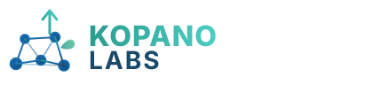

WebGL Edition · KC flight deck
Starfall Salvage
Mission
Ready
Collect cores. Dodge debris. Dash through danger.
Click canvas or hold F to fire
360° ring
- CoreKopano Labs
- BookingsBookit 5s Arena
- EditorialThe 5s Blog
- CommunityKasiLink
- ArchitectChief portfolio
- Five’sFive’s Arena
- SignalsArena News
- GameStarfall Salvage
- NavigateCape Compass
- EntertainmentAMA-PHU
- Open craftGitHub org
- DiscoverySovereign Portal
Every link = live property. 11 sovereign products. Zero dependencies. James 2:26
Leaderboard
Top Runs
- Waiting for SQLite scores
Checking local backend...
KC Protocol 13 — Commandment XII Save Kill
Mobile build paused for performance audit
The mobile branch has been severed from active deployment per Master's 80% Optimal Threshold law. We do not ship sub-threshold builds to township pilots. The desktop branch is unaffected and fully playable.
What works now: Open this URL on a laptop or desktop — full game with onboarding, danger zone, shooting, and bosses.
Mobile is being rebuilt against the Asymmetric Edge Reality test (low-end Android, township infrastructure, zero-budget hardware). Re-open this page after the next deploy.
Got a mobile-perf fix or upgrade idea? Email rkholofelo@kopanolabs.com — Sovereign Tech bounty applies (Tier 2, R500–R1500 ZAR via Yoco / PayFast / EFT).
Mission Briefing
How to Pilot Starfall Salvage
- Desktop: WASD or Arrow Keys to fly. Space to phase-dash through danger.
- Mobile: Drag the flight deck to fly; tap to start; tap mid-flight to phase-dash.
- Score: Collect blue energy cores. Avoid red debris. Hull starts at 3 hits.
- Danger zone: At 2.0x speed the lane glows red and bosses appear. They fire back — shoot first. Another boss milestone hits every 2.0x band (4x, 6x, …).
- Shoot: Press F (desktop) or tap the FIRE button (mobile). Cycle weapons with Q/E, the weapon chip, or Menu.
- Orange plates: Range targets take two hits; clear them for a score burst.
- Gold orbs: Fly through them to scale bullet power, size, and damage during the run.
Pilot Identity (XY • XX)
Select your biological identity to accommodate the interface. This sets your sovereign flight deck variables.
Sovereign Portal
Data is used for product discovery, not extraction. One identity for the Kopano Labs 360 ecosystem.
You can reopen this briefing anytime from Pilot Access → “Review briefing”. Got an upgrade idea? Email rkholofelo@kopanolabs.com — strong ideas earn a Sovereign Tech bounty.
Product Discovery
What is your primary ecosystem?

Pilot Access
Kopano Labs Flight Deck
Create a local pilot profile for best scores and leaderboard practice. It works offline and upgrades to the local backend when the optional server is running.
Fleet operators: enter the published flight-ops squad code, then Save Pilot, to unlock the OPS button on this device. Telemetry is stored locally in the browser until a backend feed is wired.
No network account required.
Pilot record
Save this run before you leave
You just cleared the salvage lane as a guest. Link a callsign to keep your best score, squad up, and climb the leaderboard.
Last run 0
Relaunch gate
Back in the lane
3
Mini salvage
SYSTEM FAILURE — TAP TO REBOOT
Rapid-tap anywhere on this panel five times before the lane collapses to relaunch with 1 hull. One rescue per run.
Time 3.0s
Taps 0 / 5
Local monitor
Flight ops
JSON export of recent client events (callsign, score, mode). Live “who logged in” across phones needs an authenticated API — see repo Structure/Blockers.md.